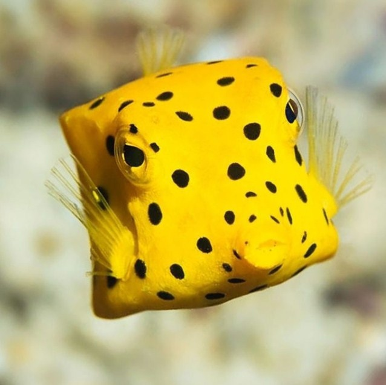

Кубик-кузовок
Описание
Кузовок-кубик — вид морских лучепёрых рыб из семейства кузовковых отряда иглобрюхообразных.
Распространена в водах Тихого и Индийского океанов в районах рифов, а также в Атлантическом океане у юго-западного побережья Африки.
Кузовок-кубик имеет кубообразную форму тела, за что получил своё название. Тело рыбы защищено, как и у других кузовковых, экзоскелетом, представленным панцирем из сросшихся костных пластин.
Дополнительным защитным механизмом помимо панциря является способность при опасности выделять токсичную слизь.
Характеристики